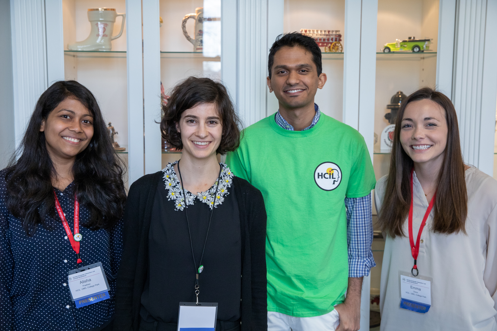

At The Health, Aging, and Technology Lab (THAT Lab), we research the design of technology for older adults and people with dementia. We focus on technology for meaningful activities and sense of purpose. We work towards a society that embraces diversity in age and cognitive ability.
We flexibly employ user-centered and design methods to involve the people we work with, placing special emphasis on incorporating perspectives of anti-ageist and dementia activists. We benefit by working with local and international organizations that share our goals.